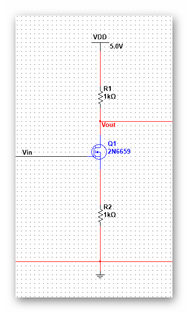

| 模拟集成电路 | |
目录： 一之MOS器件 二之单级放大器 三之差动放大器 四之电流镜偏置 五之实际电路1 六之实际电路2 七之实际电路3 八之实际电路4 九之实际电路5 十之实际电路6 十一之实际电路7 十二之实际电路8 十三之实际电路9 十四之实际电路10 十五之实际电路11 十六之实际电路12 十七之实际电路13 十八之实际电路14 返回页： 类似页：
|
六、源极负反馈共源极这就是源极负反馈电路 这个源极负反馈是电阻，并且加上了漏极负载。 （1）首先通过大信号计算： 这里先假设了电路放大倍数Gm，利用gm与大Gm的输入电压不同构建偏导等式 Gm=dId/dVgs*dVgs/dVin 右式前面等于gm，右式后面等于（1-RsGm），联立可以解得Gm=gm/(1+gm*Rs), （说明：这里的命名不是电路图中的命名，而是根据管脚命名的） 这样，处理完Rs的反馈，利用负载增益的特性，就可以求到整体的增益Av。 （2）现在转向这个电路的小信号分析。 小信号分析时可以加上调制效应和体效应。 这里有一个细节，体效应的电压可以等效为地相对于源的电压，在计算时选取了正方向就计算电流就可以。 可以得到Gm的表达式。 Rs=0，也就是没有源极负反馈时，gm随Vin的线性变化。 Rs≠0，源极负反馈引入，Id随Vin接近线性变化，Gm在开始时和gm变化类似，当Vin较大时，Gm会趋近饱和值1/Rs 这里的分析方法主要基于gm随Vin的变化和电阻不随Vin变化引起的。 （3）公式分解： 在不考虑调制和体效应时， Av=Rd*Gm=Rd*1/(1/gm+Rs) 可以看到分母等于跨阻和源反馈电阻的串联，这个电阻叫源极通路时看到的电阻。 Rd则是从漏端通路时看到的电阻。 这样增益就可以看成漏端电阻除以源端电阻， 个人觉得造成这种区别的是使用跨导时使用的是Vgs，所以从源端看是可以看到跨阻的，而漏端则没有。 同样，可以使用这种方法理解二极管连接型器件。 （4）输出阻抗 输出阻抗，就是在输入端接地时的从输出端看的阻抗。 不考虑负载时的阻抗： ro*[Ix+(gm+gmb)Rs*Ix]+Ix*Rs=Vx（这个公式选取的电压公式，注意电流的求解方向） 强调一下，Vgs决定gm，Vos决定gmb，这里的Vos指地对源点的电压。 解得Rout =[1+(gm+gmb)ro]*Rs+ro = [1+(gm+gmb)Rs]ro+Rs 上面两个公式代表了两种理解方式： 一个是ro被提高，一种Rs被提高，两种理解都有道理。 从这里可以看出，Rs可以在一定程度 提高了输出阻抗。 这里需要指出的是Rs带来了体效应，（虽然某些器件构造也会带来体效应，但是源端负反馈更加明显） （5）辅助定理 直接通过端口的特性求解，就是诺顿定理。 线性电路中的常用方法。 Gm=Iout/Vin Vout=Gm*Vin*Rout
|
|---|---|